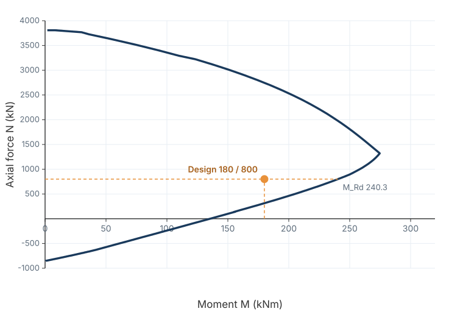

Rebuilt from the last job
Geometry, materials and bar layouts are retyped for every section. One stale cell and the answer looks right for the wrong reason.
EC2 reinforced concrete section design
Civion runs the EN 1992-1-1 checks, draws the interaction diagram, and assembles the calculation report — with the clause behind every number. For engineers who still check the numbers.
In development · Early access soon · No payment now

Example from the EC2 §6.1 worked example. The design point is inside the interaction envelope.
The spreadsheet tax
Every section starts the same way: copy the last spreadsheet, re-enter the geometry, remember which clause changed, and hope the hidden cells still hold.
Geometry, materials and bar layouts are retyped for every section. One stale cell and the answer looks right for the wrong reason.
Which national annex? Which strut angle? Which v_min? The spreadsheet remembers, but the report does not show it.
The calculation is done, then the report is written again — screenshots, tables and clause references pasted into Word.
How it works
Rectangular or circular, bars, links, materials and cover. One input set, reusable across load cases.
InputsBending with axial force, shear and detailing. The governing clause and the intermediate values are kept.
§6.1 · §6.2 · §9.2The P-M envelope from strain compatibility, with the design point and the governing mode marked.
P-M · §6.1Inputs, equations, results and a pass/fail summary in one document — ready for review.
ReportRectangular and circular sections · axial force with uniaxial or biaxial bending · shear · multiple load cases · calculation report. In development; early access will be limited.
The report
The calculation is not a black box. The report keeps the input values, the equations and the clause reference in one place — so a reviewer can follow the path from N_Ed to the final check.
The same clause-cited approach runs through the blog’s worked examples. Check the method there before you trust the tool.
N_Ed = 800 kN · M_Ed = 180 kNm · uniaxial bending
| Check | Result | Clause | Status |
|---|---|---|---|
| M_Rd at N_Ed | 240.3 kNm | Eq (6.9) | PASS |
| e ≥ e₀ | 225 mm | §6.1(4) | PASS |
| A_s,min | 320 mm² | §9.5.2(2) | PASS |
| A_s,max | 6,400 mm² | §9.5.2(3) | PASS |
| M_Ed / M_Rd | 0.75 | — | PASS |
Example from the EC2 §6.1 worked example. Values rounded.
Worked examples
Each example is a complete EC2 calculation with every intermediate value, a free spreadsheet, and a clause-by-clause verification record. Civion automates the same method — not a different one.
Read the worked examplesWho it’s for
You design, check and document your own work. You want the calculation visible, not buried in a black box — and a report you can hand over without rebuilding it.
One or two licences of the big suites, shared across the team. You need a quick, transparent section check without waiting for a seat.
Civion is a calculation tool, not a design service. Every result must be independently verified by a qualified engineer for the specific project.
Early access
Civion is in active development. The early-access list gets one email when the beta opens — no newsletter, no payment details.
If you work on a specific section you want to test first, tell me the shape, bars and load case. It helps shape the beta.
Free during early access.
No pricing yet. Early-access members will hear first when paid plans are announced.
Join the early-access listOpens your email app · or write to hugo@civion.cloud